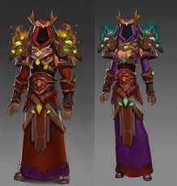
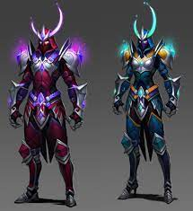
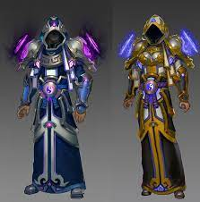

Présentation des classes
Guerrier
Le guerrier est une classe disponible ayant de très bon atouts défensifs et plus tard offensif offrant une grande panoplie de compétences défensives pour le joueur. Le début de jeu est compliqué en raison du manque d'offensif pour la classe Gardien en revanche il est beaucoup plus aisé pour les Berserker de faire des dégâts en raison de l'orientation de leur kit de compétences leur offrant une très grande polyvalence au niveau de leurs dégâts.
 Gardien et Berserker
Gardien et Berserker
Mage
Le mage est une classe spécialisé dans les sorts offensifs possédant une grande variété de sort afin de pouvoir tenir tête aux ennemis les plus coriaces. Le début de jeu sera en effet aisé car les dégâts ne manqueront pas en effet pour les joueurs choissisant la voie de la magie puisque les mages possèdent 2 classe, la première étant Mage élémentaire permettant à ces joueurs de pouvoir déchaineur la fureur élementaire sur leurs ennemis ainsi, que la classe Mage Astronome cette classe à la particularité d'utiliser le pouvoir des étoiles et des nébuleuses contre leurs ennemis mais possède aussi un côté support afin de soigner et de protéger les alliés grâce au pouvoir de la comète.
Mage élementaire et AstronomeRanger
Les rangers est une classe très surprenantes, elle se spécialise dans la furtivité ainsi que l'agilité, proposant d'un côté le combat à distance via la classe Archer permettant de décocher des flèches avec une précision quasi mortelle et possède un panel de flèches adaptées à chaque situations. Tandis que sa deuxième partie se spécialise plus dans la furtivité extrême l'Assassin lui mise tout sur ses effets de poison ainsi que ses nombreux tours de passe-passe tel que le brise-armure, l'endormissement, etc...
L'assassin est un atout idéal en match JcJ (Joueur Contre Joueur) là où il pourra exceller dans la mesure où le champ de bataille sera son terrain de jeu.
Assassin et ArcherMoine
Le Moine est un pieux, cet individu en a marre de voir des innocents souffrir il a donc décidé de prendre par au champ de bataille afin d'assister au mieux ses coéquipiers, certains d'entre ces moines ont pris la voie de la Foi cette classe est exclusivement faites pour soigner et très rarement attaquer, en effet leurs différents sorts de guérisons sont indispensable pour les guerriers qui seront souvent au front et qui passeront leur temps à protéger ces derniers tandis que les moines et dernières lignes seront là pour l'équipe. Tandis que certains se sentent mieux en dernière ligne certains moines ont forgé leur corps ainsi que leur esprit, les moines Shaolin assimilent le pouvoir du Ying et du Yang afin d'essuyer des assauts dévastateurs sur leurs ennemis
Moine Shaolin et PrêtreChevalier Flamboyant
Les Chevaliers Flamboyant est une classe spéciale, ces disciples de Khalin sont des guerriers ayant étudier la voie de la flamme, leur rôle est de repousser la vague incessante de démon s'abattant sur Haradon, préserver la paix ainsi que de retrouver les fragments du Marteau de Khalin ayant forgé les terres d'Haradon.
Lors de combats difficiles ces chevaliers se transforment et revêtent une armure chevaleresque lumineuse leur permettant de puiser dans leur foi envers Khalin et vaincre les ennemis les plus forts.
 Chevalier Flamboyant Brasier/Garnison
Chevalier Flamboyant Brasier/Garnison